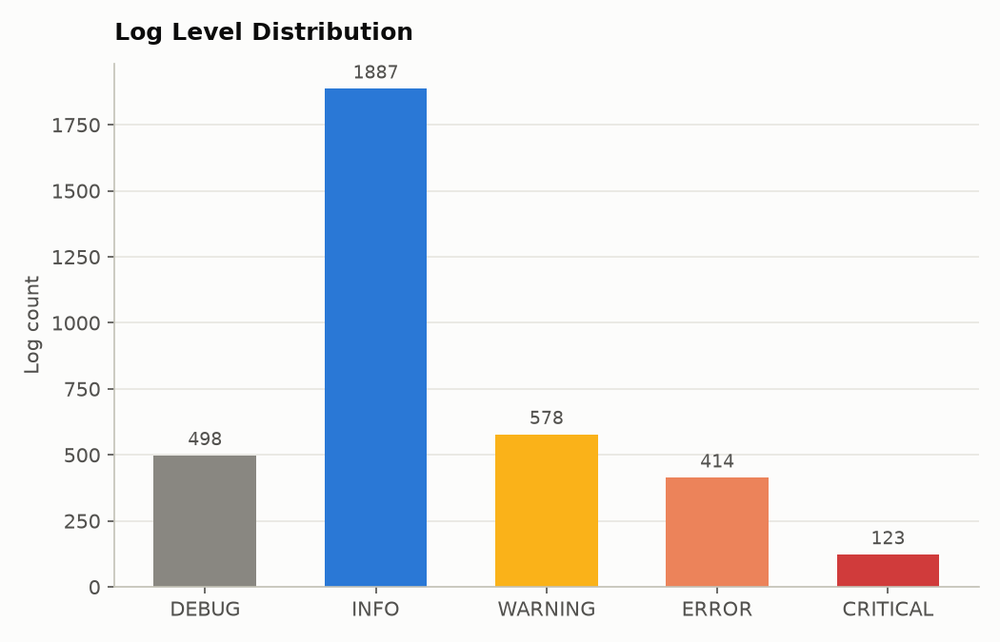
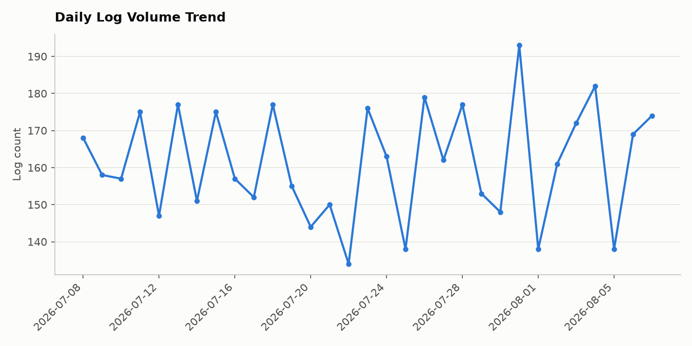
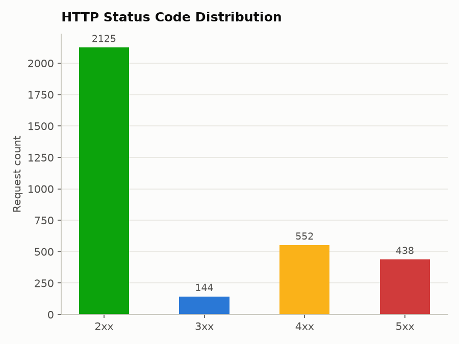
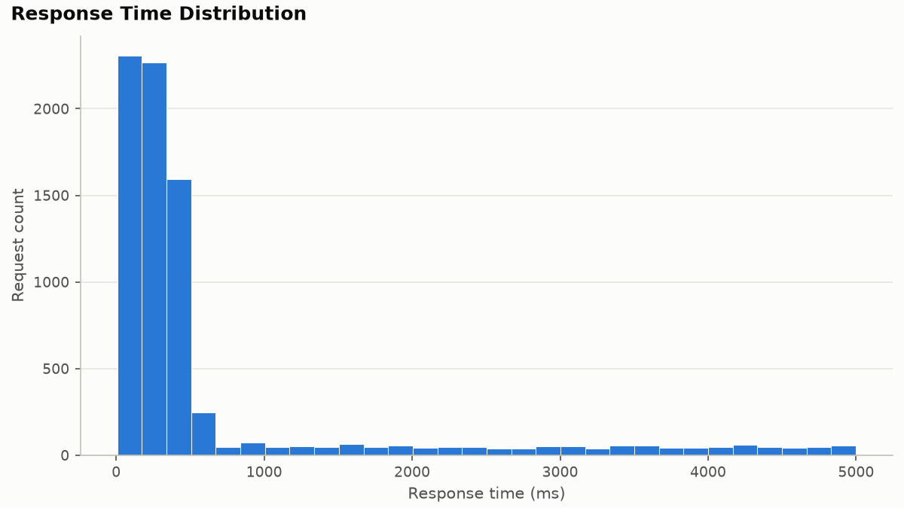
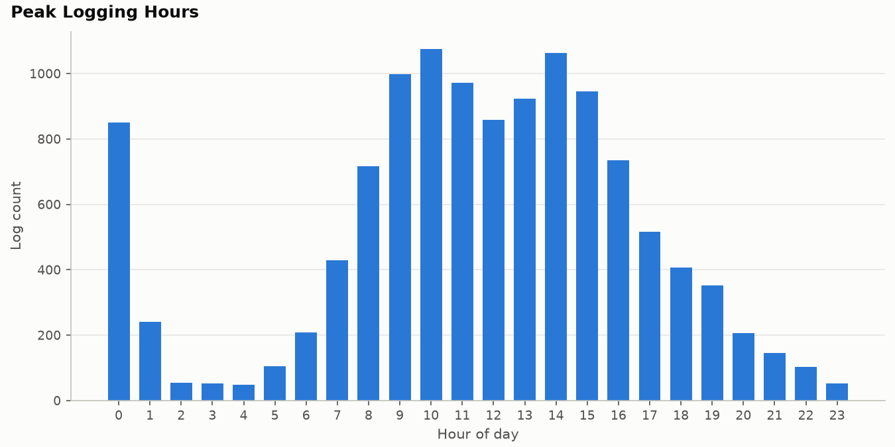
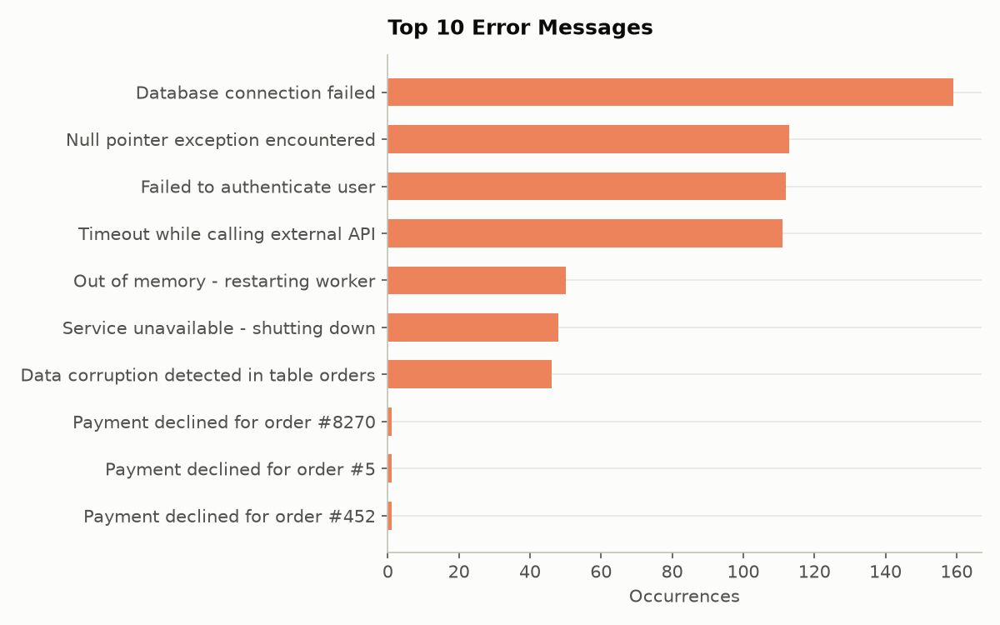
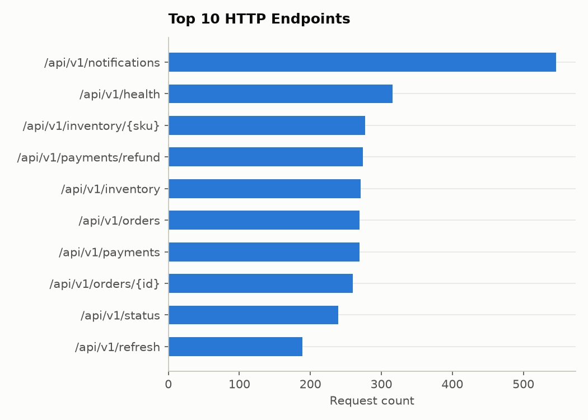
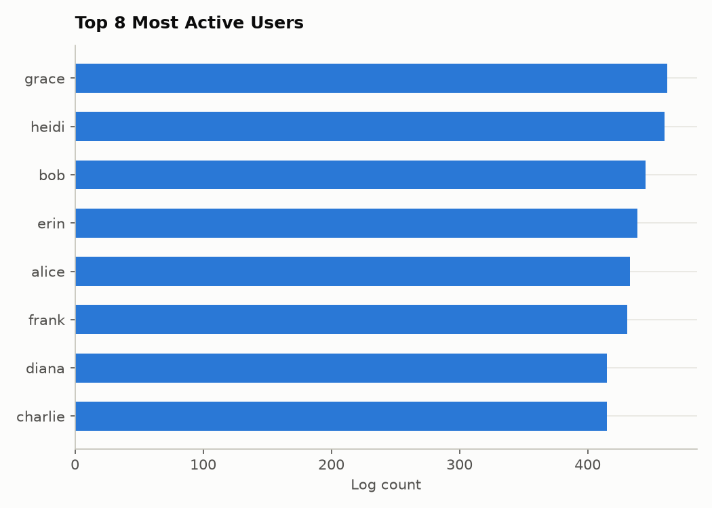

Unstructured logs in.
Structured answers out.
LogSX is an ETL and analytics pipeline for application log files: a streaming regex parser turns raw text into typed rows, PostgreSQL stores them with automatic de-duplication, and Pandas/NumPy/SciPy turn the result into percentiles, trends, and outliers — from a CLI, a desktop GUI, or a single portable .exe.
Six stages, one command.
Every log file moves through the same fixed pipeline — run stage by stage, or as one shot via python main.py pipeline <file>.
Parse
Streamed line-by-line against one regex — constant memory no matter the file size. Non-matching lines under an ERROR/CRITICAL entry are captured as its exception + stack trace.
Ingest
Batched writes with a SHA-256 content hash per line, so re-ingesting the same file twice is always a safe no-op.
Store
Normalized schema — users/modules/loggers/levels lookups, a log_entries fact table with nullable FKs, an ingestion_runs audit log.
Analyze
One joined DataFrame drives error rates, trends, percentiles, HTTP breakdowns, and z-score outlier detection.
Visualize
Eight chart figures regenerated on demand from whatever is currently in the database.
Export
The same summary as structured files, ready to hand off or diff between runs.
What it actually does.
Streaming regex parser
Timestamp, level, PID, thread, logger/module/function, trace/user/session IDs, IP, HTTP method/endpoint/status/response time, message, and multi-line exceptions. Malformed lines are logged and counted — never fatal.
Content-hash de-duplication
Every line gets a SHA-256 fingerprint before it reaches PostgreSQL. Ingesting the same file twice, by accident or on purpose, changes nothing.
Normalized relational design
Lookup tables for users, modules, loggers, and levels feed one fact table with nullable foreign keys — because not every line has an authenticated user or an HTTP context.
Statistics, not just counts
Response-time p90/p95/p99, HTTP status breakdowns, top/slowest endpoints, exception-type frequency, and z-score outlier-day detection on daily volume.
Eight generated charts
Level distribution, daily trend, status codes, response-time histogram, peak hours, top errors, top endpoints, top users — regenerated from the current database state.
Three ways to run it
A full argparse CLI for scripting, a Tkinter desktop GUI for point-and-click, and a portable LogSX.exe for a machine with no Python installed. Same services underneath — no duplicated logic.
What comes out the other end.
A synthetic 5,000-line run (python main.py generate-sample --seed 42) through the full pipeline. Numbers shown are from that one run, not a live claim.
Every chart, generated by the pipeline itself.
Actual Matplotlib exports from a sample run — not mockups.








What it's built with.
CLI, GUI, or a standalone .exe.
Same ingestion/analytics/chart/report services underneath all three — pick whichever fits.
A Tkinter desktop app wraps the same services the CLI uses, for anyone who'd rather click buttons than type commands. Long-running actions run on a background thread with live output streamed into the panel, so the window never freezes.
The GUI packages into a single portable LogSX.exe via PyInstaller — no Python install needed on the machine that runs it. Pandas/NumPy/SciPy/Matplotlib are bundled in, which puts it around 85 MB.
.env next to LogSX.exe before running it; a frozen build resolves its config directory relative to itself, not the source tree.